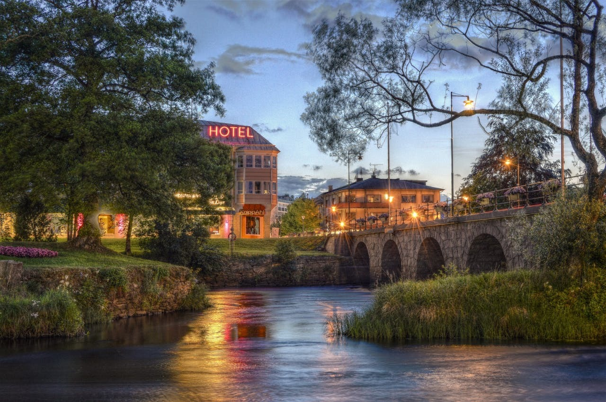

Altın Kumlar Hotel & Spa
Altın sarısı kumsalları ve berrak denizi ile ünlü Altın Kumlar Hotel & Spa, lüks ve konforun birleştiği bir tatil deneyimi sunuyor. Geniş odaları, özel havuzlu süit seçenekleri ve modern spa merkezi ile kendinizi şımartabilirsiniz. Akdeniz mutfağının en seçkin örneklerini sunan restoranı, gün batımı manzaralarıyla unutulmaz yemekler vaat ediyor. Ayrıca, düzenlenen yoga ve pilates dersleriyle zinde kalabilirsiniz. Balayı çiftleri ve romantik bir tatil isteyenler için mükemmel bir tercih!
Rezerve Et
The Fullerthon Hotel
Sessiz bir sahil kasabasında yer alan The Fullerthon Hotel, hem romantik kaçamaklar hem de aile tatilleri için ideal bir destinasyondur. Otelin her biri deniz manzaralı süitleri, modern dokunuşlarla geleneksel mimariyi birleştirir. Özel plajında gün boyu güneşlenebilir, akşamları ise otelin sahil restoranında taze deniz ürünlerinin tadını çıkarabilirsiniz. Çocuklu aileler için oyun alanları ve babysitter hizmeti sunan otel, çiftlere de spa ve özel yemek organizasyonları ile keyifli anlar yaşatır. Doğal güzellikleriyle ünlü bu mekânda huzur dolu bir tatil sizi bekliyor.
Rezerve Et

Deniz Işığı Resort
Ege Denizi’nin büyüleyici manzarasına sahip olan Deniz Işığı Resort, sakin bir tatil arayanlar için mükemmel bir kaçış noktasıdır. Modern tasarımlı odaları ve geniş balkonları ile misafirlerine konfor sunar. Otel, özel plajı, açık havuzları ve spa hizmetleri ile dikkat çeker. Ayrıca, Türk ve dünya mutfağından lezzetler sunan restoranı da misafirlerini memnun eder. Çocuk kulübü ve su sporları aktiviteleri ile aileler için ideal bir seçenektir. Huzurlu bir tatil için bu otel sizi bekliyor!
Rezerve Et